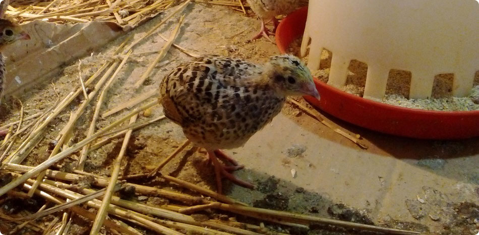
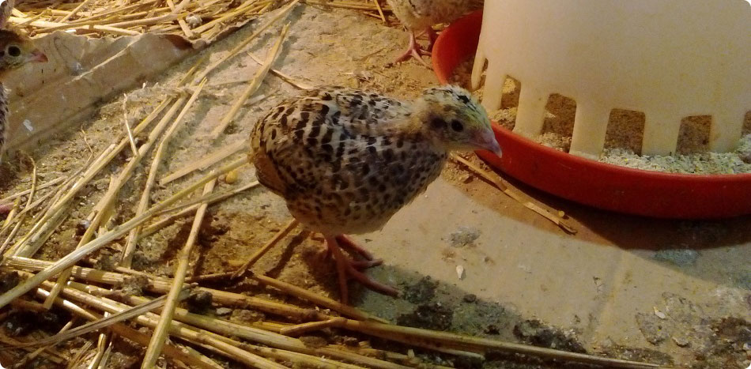
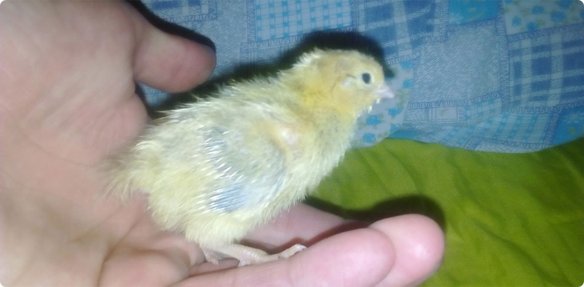
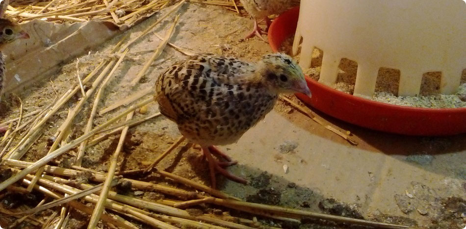
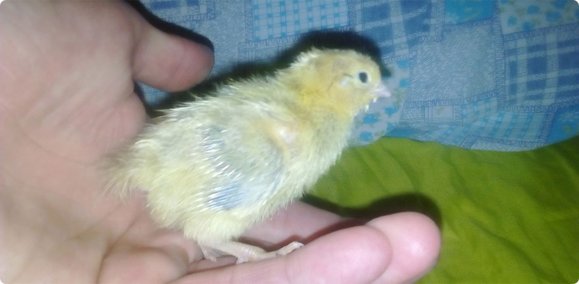
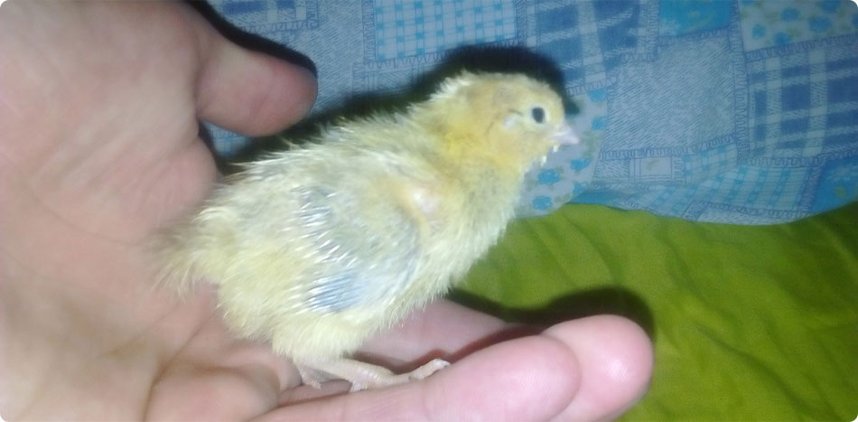
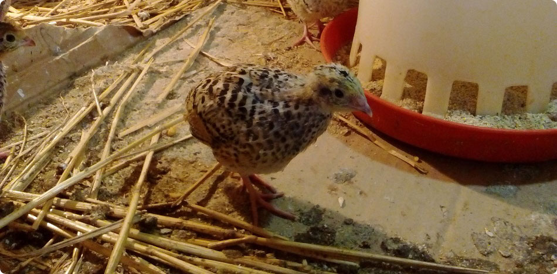
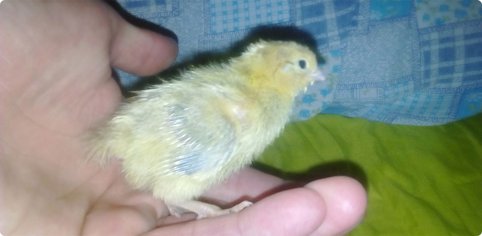

 





Gazdinstvo Nikolić je smesteno u selu Omoljica, opština Pančevo nadomak Beograda. Jednim delom kroz Omoljicu protiče reka Ponjavica koja je zaštićeno prirodno dobro - park prirode sa velikim brojem ptica močvarica.
Omoljica je jedno mirno Banatsko selo u kome vreme sporije teče i ljudi se još uvek druže na sokaku zbijajući šale na račun "mladih snasa i po neki trač, ta još te da se komarci ne ujedaju ko kere mogli bi tako i osvanuti na klupi".
Nedelja je rezervisana za porodično okupljanje uz nedeljni ručak koji mora biti gotov do podne kod svake vredne domaćice. Ručak uglavnom čini supa, rinflajš sa sosom od mirođije i naravno pečena svinjetina sa krompirom. Za dezert obavezno krofne ili štrudla sa makom, ali se može naći kolač sa rogačem ili knedle sa šljivama ili barem pita sa visnjama. To zavisi koliko je domaćica raspoložena tog jutra. Posle ručka se može otici komšijama u posetu ali da se ponesu najlepša parčad kolača,a domaćica se šepuri kako su joj lepo izašli kolaci, ali bi bili još bolji da joj je kvasac bio svež. Naravno i druga komšinica je već zapakovala plehani tanjirić sa kolačima da ponesu komšiji kada krenu svojoj kući.
Malo ljudi zna da je baš u Omoljici snimana serija "Salaš u malom ritu" i da neke od tih kuca i danas postoje da svedoče o nekim starim vremenima.
Selo je poznato i po Međunarodnom festivalu amaterskog filma "Žisel" koji se redovno odrzava od 1971godine.